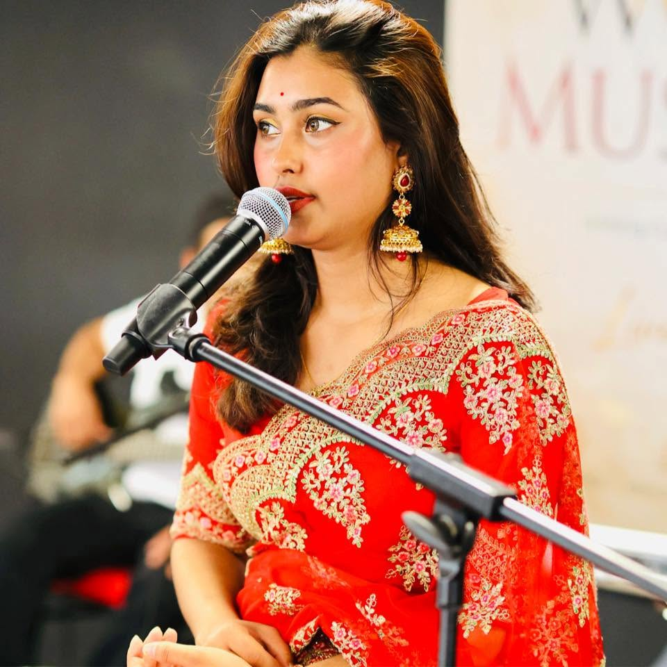

Actor, Musician and Visual Artist

Edinburgh Mela Ltd.
Melange Network UK
Banglascot Foundation
PANDAL (Festival Organizer)
1. Palakrome Barbar, 2. Adab, 3. Joyjoyonti, 4. Dui Boloder Golpo, 5. Kandte Mana, 6. Circus Circus, 7. Aronay Sangbad, 8. A Man for All Seasons, 9. Koinnya, 10. Bish Panchali, 11. Jontu, 12. Dorir Khela, 13. Jhora Phool, 14. Raja ebong Onnanyo
Regularly acted in several Film, Tele Film, Tele Drama & Serials, Performance Art: 1. 2001 - Vomra (Love), 2. 2001 - Mirror Game (Power), 3. 2003 - Pink Man, 4. 2005 - Black & White, 5. 2005 - Mon Monia (Soul), 6. 2008 - “Luz da vida”, 7. 2008 - Lullabai BA.BA, 8. 2010 - To Dear Father, 9. Bells tree, 10. Operation theater, 11. 2011 - Ondorjatra, 12. 2011 to Present - Laaljatra, 13. 2017 - 100% Pure, 14. Made in Bangladesh, 15. Blowing in the Wind
1. Boom, 2. Fouj Holt, 3. Ole ole Ola (Bahia), 4. Laaljatra
1. Bish Panchali, 2. No Man’s Land, 3. Mandar, 4. Laal, 5. 2X2=4, 6. Ural, 7. Shataroop (Based on Tagore)
1. No Man’s Land, 2. Mandar, 3. Sinduk, 4. 2X2=4, 5. Ural
1. Iblish, 2. Dhrubo Tara, 3. Circus Circus, 4. Joyjoyonti, 5. Lebedev, 6. Halum Halum, 7. Adab, 8. Bahe Nidhua Pathar
1. Oh! Dream, 2. The Storyteller, 3. Shadow Opera, 4. Time & Tide, 5. Inner ‘i’, 6. Abuse, 7. Invisible Line, 8. 3rd ‘i’
1. Dhrubo Tara, 2. Circus Circus, 3. A Man for All Seasons, 4. A MidSummer Night’s Dream, 5. Oliver Twist – The Musical, 6. Loha, 7. Jontu, 8. Bish Panchali, 9. Koinnya, 10. Bahe Nidhua Pather, 11. Third Eye, 12. Rhinoceros, 13. Bibaho Britanto, 14. Kandte Mana, 15. Bou Basanti, 16. Macbeth, 17. Musical ensembles composition (1 hour) for open air concert, 18. Punorjonmo, 19. Mayer Mukh, 20. Phool, Pakhi, 21. Nodirgaan (musical performance)
1. Chip (Beta Format), 2. Phool Kumar (16 mm), 3. Porshi (Documentary), 4. Bishoroner Nodi – The Little River Lithe (16 mm), 5. Circle (16 mm), 6. Photograph (16 mm), 7. Jamdani (docu), 8. Shishuk (river Dolphin), 9. Common Gender. Regularly composes background score, jingle and OST for Ad Film, Tele Film, Tele Drama & Serials.
1997 - Prachyanat, 1995-1997: Aranyok Natya Dal, 1991-1997: Darpan Theater, Melange Network, Joler Gaan